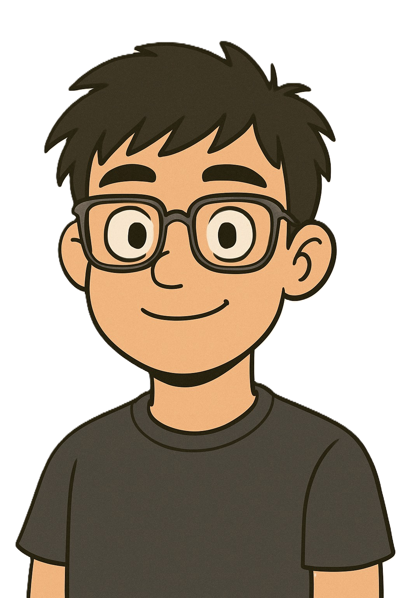

Diseño y codifico cosas maravillosamente simples, y me encanta lo que hago.
Soy una persona proactiva, responsable y apasionada por la tecnología. Me encanta aprender cosas nuevas, resolver problemas y trabajar en equipo para crear soluciones eficientes y funcionales. Durante mi formación como Ingeniero, desarrollé habilidades sólidas en desarrollo web, bases de datos y diseño de interfaces, con un enfoque especial en la experiencia del usuario. Siempre estoy buscando mejorar mis habilidades y mantenerme actualizado con las últimas tendencias tecnológicas. Me defino como alguien curioso, creativo y comprometido con la calidad. Creo firmemente en el poder de la tecnología para transformar ideas en soluciones reales que impacten positivamente a las personas.